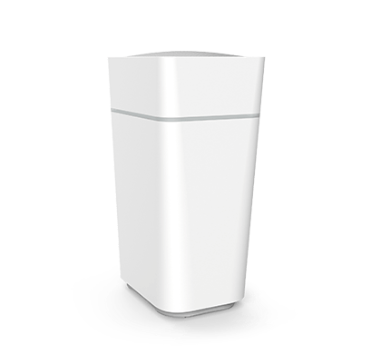

Guten Tag,
ich plane eine Mesh WLAN Erweiterung bei mir Zuhause zu installieren. Funktionieren die Repeater von Fritzbox einwandfrei mit den Magenta Modems? Ich selber habe die Connect Box (welche grundsätzlich beim 1Gigabit Tarif dabei ist). Da mir solche kleineren Geräte aufgrund des Platzes lieber sind, würde ich gerne die größeren Repeater, welche man hinstellen und das Netzteil eben noch separat anschließen muss, vermeiden.
Beste Grüße
Hey @KeinTalent
vor 3 Stunden schrieb KeinTalent:Ich selber habe die Connect Box (welche grundsätzlich beim 1Gigabit Tarif dabei ist).
Also, du hast die Fiber Box 2?

Wenn du tatsächlich ein Mesh W-Lan aufbauen willst, brauchst du einen Mesh Master. Bei AVM sind nur die Fritz!Boxen als Mesh Master einsetzbar. In Kombination mit der Fiber Box sind die Fritz!Repeater eben nur Repeater.
Die Fritz!Repeater sollten mit den Fiber Boxen zusammenarbeiten, allerdings wäre es bei W-Lan Systemen besser, wenn alles vom selben Hersteller kommt.
LG NTM
Ja, genau die hab ich.
Dass es vom selben Hersteller kommen sollte hatte ich auch schon im Hinterkopf.. grundsätzlich würde ich ja einfach das Mesh W-Lan System direkt von Magenta beziehen aber die sind doch ein wenig groß. Wobei ich damit noch einigermaßen klar kommen würde, wenn es reibungslos funktioniert. Hast du (oder jemand anders) bereits Erfahrungen mit dem Mesh W-Lan System von Magenta gemacht?
Beste Grüße